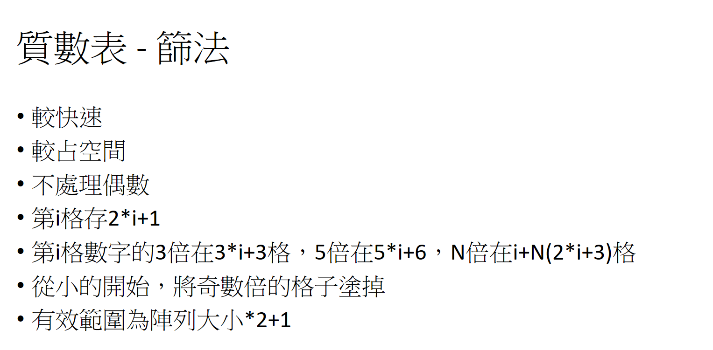
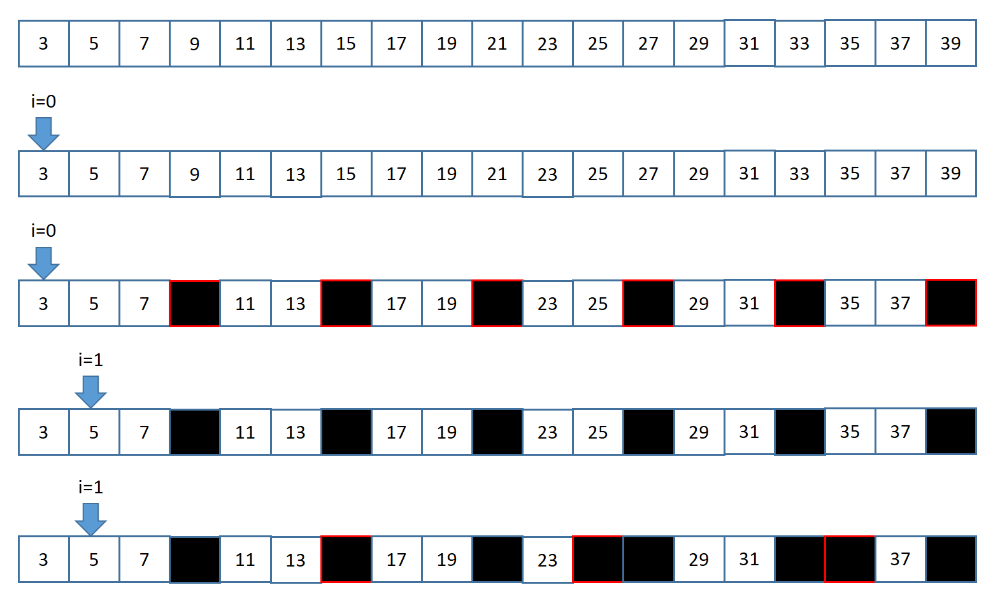
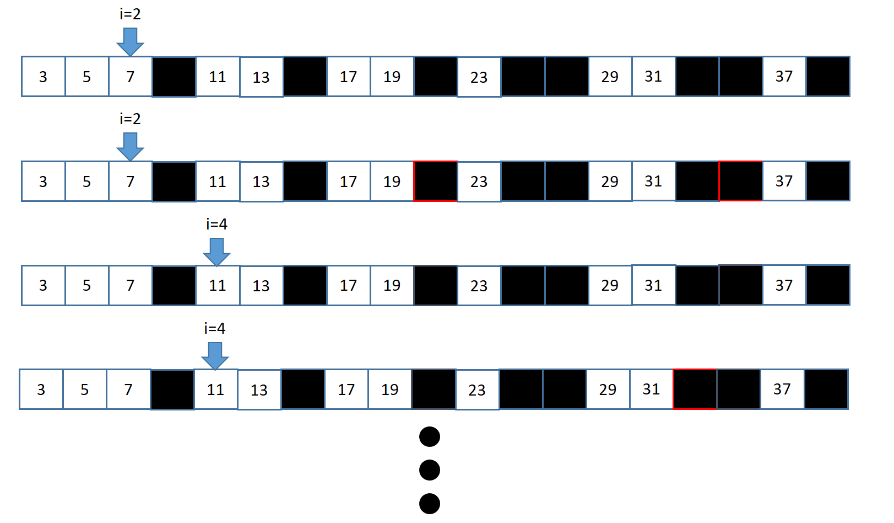

Codeforces 230B
Codeforces 230B - T-primes
We know that prime numbers are positive integers that have exactly two distinct positive divisors. Similarly, we’ll call a positive integer t Т-prime, if t has exactly three distinct positive divisors.
You are given an array of n positive integers. For each of them determine whether it is Т-prime or not.
Input:
The first line contains a single positive integer, n (1 ≤ n ≤ 105), showing how many numbers are in the array. The next line contains n space-separated integers xi (1 ≤ xi ≤ 1012).
Please, do not use the %lld specifier to read or write 64-bit integers in С++. It is advised to use the cin, cout streams or the %I64d specifier.
Output:
Print n lines: the i-th line should contain “YES” (without the quotes), if number xi is Т-prime, and “NO” (without the quotes), if it isn’t.
範例:
input:
1 | 3 |
output:
1 | YES |
Note:
The given test has three numbers. The first number 4 has exactly three divisors — 1, 2 and 4, thus the answer for this number is “YES”. The second number 5 has two divisors (1 and 5), and the third number 6 has four divisors (1, 2, 3, 6), hence the answer for them is “NO”.
題意:
題目定義一個數只有三個不同的因數，叫做T-Prime。現在給你N個數，問你他們各自是不是T-Prime。
思路:
因為只有三個因數，1跟自己就佔了兩個，所以剩下的一個一定是你的平方根，而且而且平方根還不能有其他因數，因此平方根必須是質數。2跟4是唯二的特例，例外處理，其他的偶數不必處理。先建立質數表，然後用二分搜尋法查找他平方根在的那格是不是質數就可以了。


